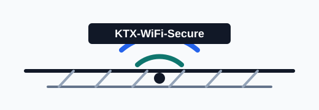

KTX-WiFi-Secure 자동 연결 프로파일
iPhone Safari에서 현재 월의 Wi-Fi 프로파일을 내려받아 설치합니다. 사용자 이름과 암호는 매월 wifiMM 형식으로 맞춰집니다.

설치
SSID: KTX-WiFi-Secure
현재 월 확인 중
인증 방식
PEAP / EAP 25
사용자 이름
wifi08
암호
wifi08
iPhone에서 열기 Safari로 열어야 프로파일 설치 화면으로 이어질 가능성이 가장 높습니다. 설치 링크는 브라우저 안에서 iOS용 MIME 타입으로 보정됩니다. 설치 뒤에는 설정 앱의 프로파일 또는 VPN 및 기기 관리 화면에서 설치를 완료해야 합니다.
설치 순서
- iPhone Safari에서 이 페이지를 엽니다.
- 현재 월 프로파일 설치를 누릅니다.
- 설정 앱에서 다운로드된 프로파일을 설치합니다.
- KTX-WiFi-Secure 접속 시 인증서 화면이 나오면 표시된 인증서 정보를 확인합니다.
매월 1일 자동으로 열기
단축어 앱에서 개인용 자동화를 만들면 매월 1일 아침에 현재 월 프로파일 다운로드가 바로 시작됩니다. iOS 보안 확인과 프로파일 설치 암호 입력은 직접 진행해야 합니다.
- 단축어 앱을 열고 자동화 탭에서 새 자동화를 만듭니다.
- 시간 조건을 선택하고 매월 1일, 열차 타기 전 시간으로 맞춥니다.
- 실행 방식을 즉시 실행으로 선택합니다.
- 새 빈 자동화에 URL 동작을 추가하고 위 주소를 붙여넣습니다.
- URL 열기 동작을 추가한 뒤 완료합니다.